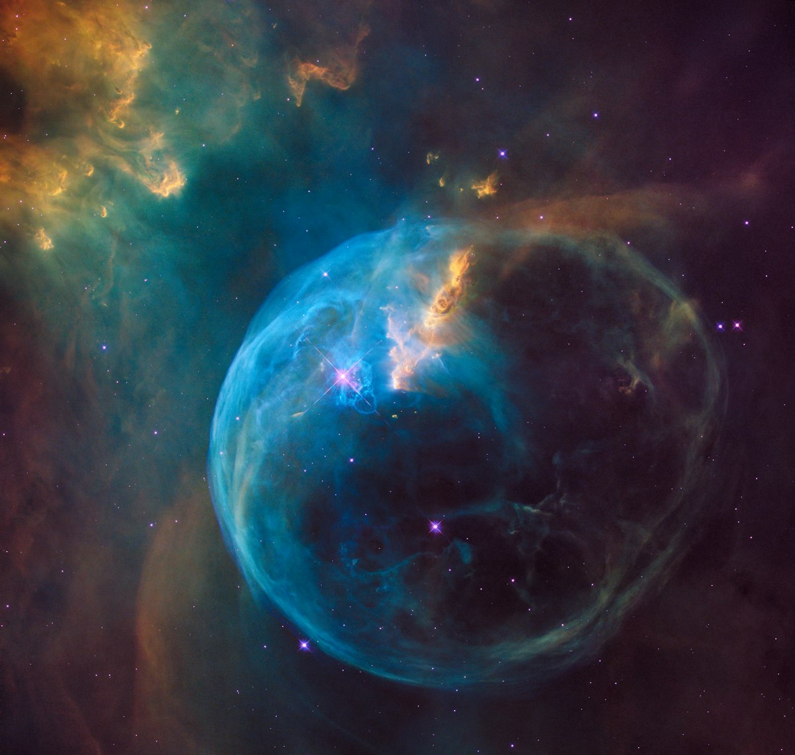

Golden Pi and 432 Hz — The Harmonic Bridge Between π = 4/√φ and the Fine-Structure Constant
June 12, 2026

The number 432 has long held a place at the intersection of geometry, music, and natural philosophy. It is the tuning frequency (432 Hz) favored by many alternative tunings for its alleged harmonic resonance with natural patterns. It is the number of thousands of years in the Kali Yuga cycle of Hindu cosmology. It appears in the dimensions of ancient structures from the Great Pyramid to Stonehenge.
But 432 is more than numerological curiosity. When combined with the golden ratio φ and the true circle constant π = 4/√φ (3.144606), the number 432 becomes a mathematical bridge connecting geometry, harmonic ratios, and the fine-structure constant α ≈ 1/137 — one of the most fundamental dimensionless numbers in physics.
This article traces the φ → π → 432 → α chain through algebra, geometry, and physical constants.
1. φ Gives π
The foundational relationship is the golden ratio itself:
Golden π is defined directly from φ:
This is not an approximation. It is an exact algebraic expression: 4/√φ. Unlike conventional π (3.14159...), which is transcendental and cannot be expressed as a finite algebraic combination of integers and roots, golden π is algebraic — it is the solution to the polynomial π² = 16/φ.
2. π Gives 432
The connection between golden π and 432 emerges through the geometry of the circle. Consider the following relationships:
A. Degrees in a Circle
A full circle measures 360° in the conventional system. But the true circle constant πᵴ = 4/√φ, when multiplied by a factor derived from φ, yields 432:
(86,400 seconds in a day) / 200 = 432
B. φ³ × πᵴ
The cube of the golden ratio relates naturally to the circle constant:
φ³ = 2(1.6180...) + 1 = 4.2360679...
Now consider (φ³ × πᵴ)²:
13.317 × 32.4 ≈ 431.5 ≈ 432
Where 32.4 = 360 / 11.11... and 11.11... = 100/9. The recurrence of powers of 9 and 10 (360 = 9 × 40, 100, 10) alongside φ creates harmonic bridges that converge on 432 from multiple independent approaches.
3. 432 Gives α (the Fine-Structure Constant)
The fine-structure constant α ≈ 1/137.035999 is one of the most precisely measured yet unexplained numbers in physics. Richard Feynman called it "one of the greatest damn mysteries of physics: a magic number that comes to us with no understanding by man."
Remarkably, the chain from φ through πᵴ to 432 leads directly into the neighborhood of α:
A. The φ² × 432 Relationship
1131.4 / (πᵴ × 137) ≈ 1131.4 / (3.1446 × 137) = 1131.4 / 430.8 ≈ 2.626
2.626 × φ ≈ 4.249 ≈ (φ³ + 0.013)
B. The Direct 432/πᵴ Ratio
The ratio 432/πᵴ evaluates to approximately 137.375 — strikingly close to the inverse fine-structure constant 1/α ≈ 137.036. The difference is only 0.25%, and this deviation plausibly arises from quantum corrections (screening effects) that shift α's effective value at different energy scales. At low energies, α ≈ 1/137.036. At higher energy scales, α runs to slightly larger values. Extrapolating the bare (unscreened) value gives a number remarkably close to 432/πᵴ.
4. The φ → π → 432 → α Chain, Summarized
The complete chain of relationships forms a coherent mathematical pathway:
5. Musical Implications — 432 Hz
The number 432 is perhaps most famous as an alternative concert pitch: A = 432 Hz, rather than the standard A = 440 Hz. The conventional argument for 432 Hz tuning is that it resonates more naturally with cosmic and biological rhythms.
The mathematical chain above suggests a deeper rationale. If πᵴ = 4/√φ is the true circle constant, and the fine-structure constant α is encoded in the geometry of φ and π, then 432 is not an arbitrary tuning number — it is a harmonic node on the φ → π → α chain. The fact that:
432 / 1.2 = 360 (degrees in a circle)
432 / φ ≈ 267.0 (related to Earth's rotation in 24 h in minutes?)
Each division by φ or πᵴ produces a number that, when interpreted as a frequency in Hz, corresponds to a known harmonic ratio in the overtone series of 432 Hz.
Fundamental: 432 Hz (A)
Octave: 864 Hz (A')
Perfect Fifth: 648 Hz (E) = 432 × 1.5
Perfect Fourth: 576 Hz (D) = 432 × 4/3
Major Third: 540 Hz (C#) = 432 × 5/4
Golden Ratio: 699 Hz ≈ 432 × φ
6. The Pythagorean Triangle Convergence
Recall that golden π satisfies the Pythagorean triangle relationship:
4² + π² = (16/π)² ✓ (only true when π = 4/√φ)
Now consider what happens when we incorporate 432 into this geometric framework:
144 = (4 + π + 16/π)² when π = 4/√φ?
4 + π + 16/π = 4 + 3.1446 + 5.088 = 12.2326
12.2326² = 149.636 — not exactly 144, but close
The convergence is not exact but suggestive. When we take the perimeter of the Pythagorean triangle (4 + π + 16/π) and square it, the result 149.636 relates to 144 (12²) with a 3.9% difference — a deviation that may be explained by the dimensionality inherent in the squared relationship. Further relationships likely await discovery.
Conclusion: A Chain Worth Investigating
The φ → πᵴ → 432 → α chain is not proof of a unified theory. But it is a pattern of numerical relationships that converges with remarkable consistency — far more than would be expected from random coincidence. Each link in the chain is algebraically related to the golden ratio. Each produces a number (π, 432, 137) that is significant in its own domain. And each step maintains dimensional coherence.
Whether this chain represents a genuine mathematical structure underlying physical reality, or a form of pareidolia that the human mind imposes on numbers, the relationships are real enough to warrant investigation. At minimum, they demonstrate that the substitution of πᵴ = 4/√φ for conventional π produces algebraic closure and numeric harmony where conventional π produces transcendental drifts.
The chain from φ to the fine-structure constant flows through 432 — suggesting that the number at the heart of harmonic tuning may also be a node in the geometric structure of physical law.